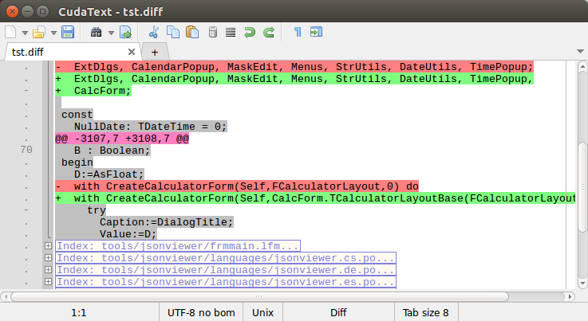
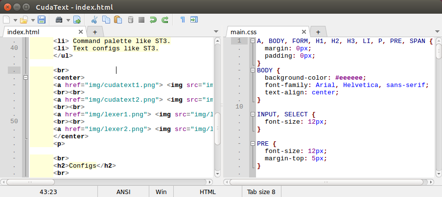
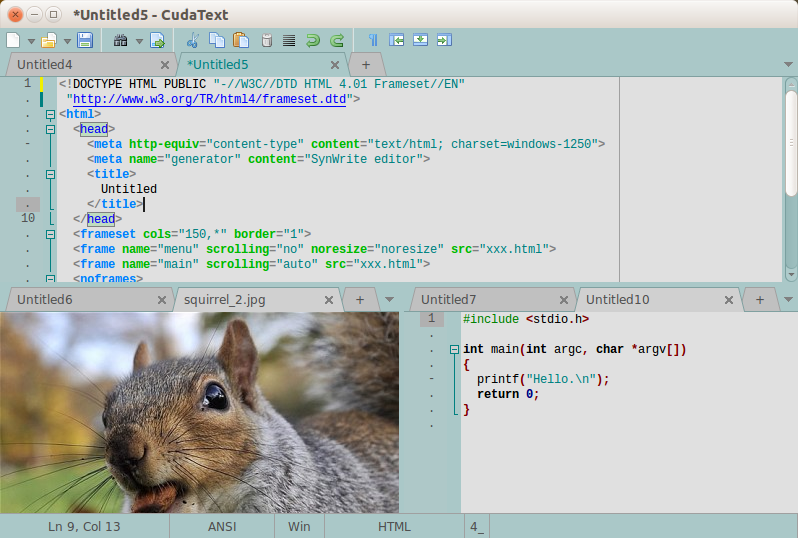
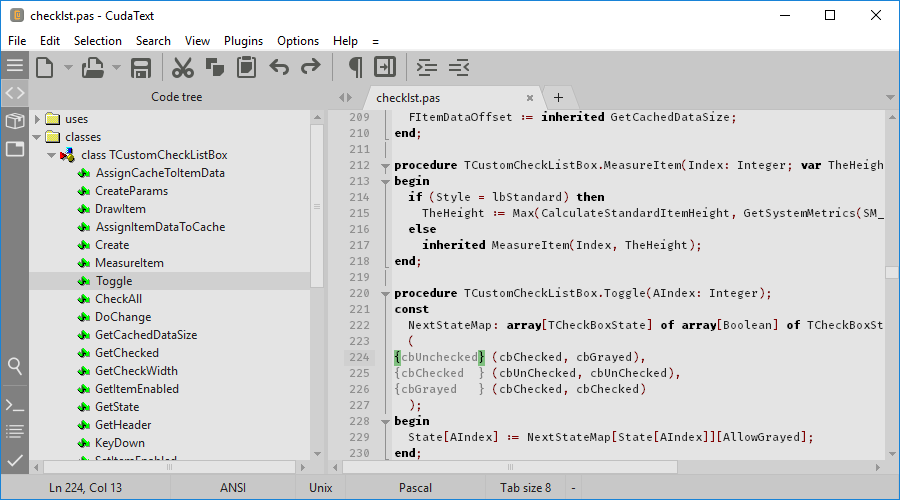
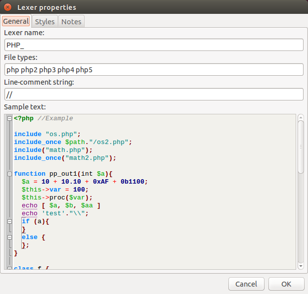
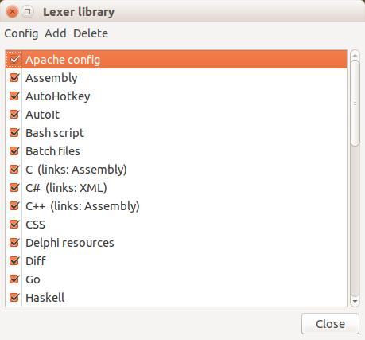
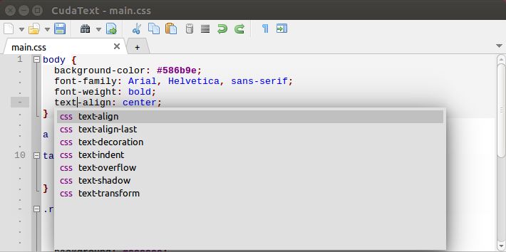

CudaText is a cross-platform text editor, written in Lazarus.
Features include:
- Syntax highlight for many languages: C, C++, Java, JavaScript, HTML, CSS, PHP, Python, XML... Totally 160+ lexers from SynWrite are supported.
- Code folding.
- Code tree structure (SynWrite style).
- Multi-carets.
- Multi-selections.
- Find/Replace with regex.
- Plugins in Python language. Plugins can do lot of things.
- Configs in JSON. Lexer-specific configs.
- Tabbed UI.
- Split each tab.
- Split view for 2/3/4/6 files.
- Simple auto-completion (fixed list) for some lexers.
- Command palette (ST3 style).
- Minimap (ST3 style)
- Micromap.
- Show unprinted whitespace.
- Support for many encodings.
- Customizable hotkeys.
- Smart auto-completion for HTML, CSS.
- HTML tags completion with Tab-key (Snippets plugin).
- HTML color codes (#rgb, #rrggbb) underline.
- View pictures (jpeg/png/gif/bmp/ico).
{kind=link}
multi-selections, replace dialog at bottom

{kind=link}
diff file, blocks folded

{kind=link}
2 groups shown

{kind=link}
3 groups shown, picture opened

{kind=link}
tree panel for Pascal, find-dialog

{kind=link}
lexer-properties dialog

{kind=link}
lexer-library dialog

{kind=link}
auto-completion for CSS
Features which are done as plugins
- Addons manager
- Snippets
- External tools
- Macro manager
- Session manager
- Spell checker
- Brackets highlight, go to pair bracket
- Highlight all occurences
- Color picker
- Insert date/time
- HTML/ CSS/ JS/ XML/ SQL formatter
- Tabs list in sidebar
- Menu configurator
- etc...
Configs
- Call menuteim "Settings-default" and you'll see default config. Copy any lines to config called by "Settings-user" and edit lines in this user config.
- Lexer-override config: settings for single lexer only. E.g., if you open Pascal file, lexer-override for Pascal is read after user config.
- File-types config: you can specify mapping between file types and lexer names. Such mapping exists in lexer-library, this config overrides it.
- Keys config: hotkeys dialog allows to customize hotkeys for all program actions.
- Color themes: color editor dialog allows to customize colors and save them to a theme file.
Wiki
Find more information at the Wiki page.